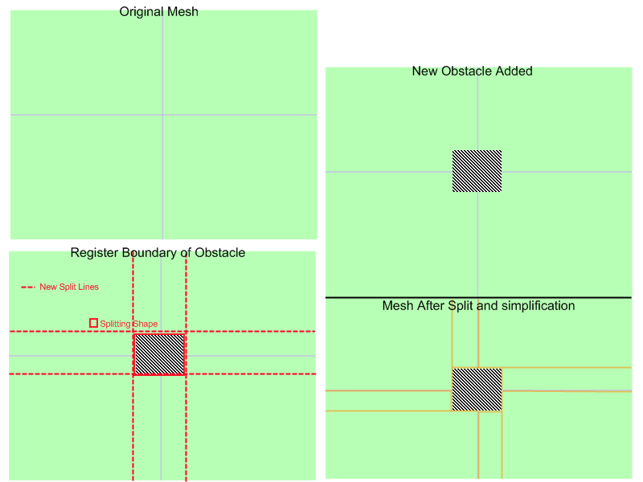
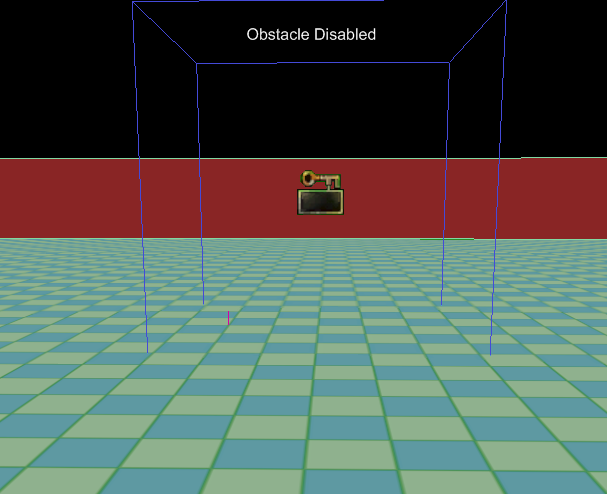
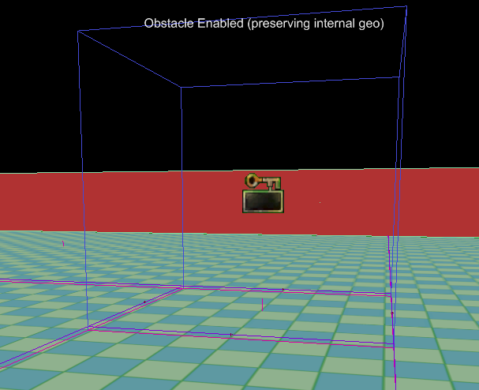
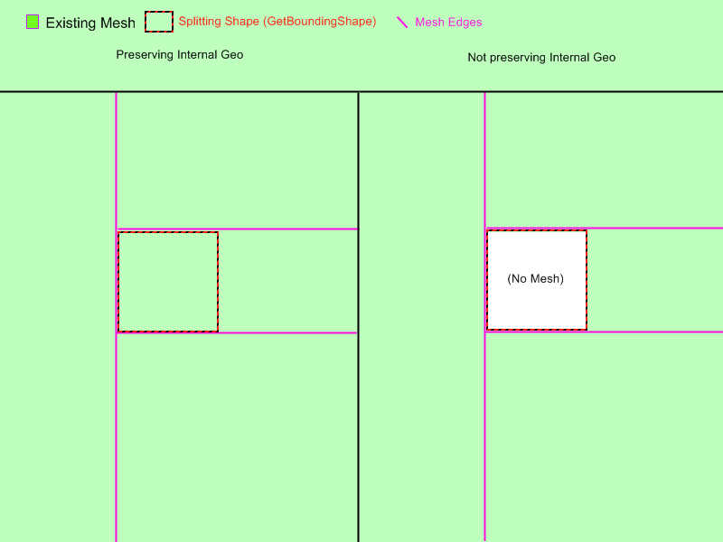
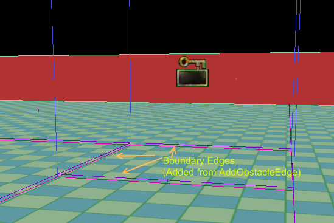

UDN
Search public documentation:
NavMeshDynamicObstacleSplitting
日本語訳
中国翻译
한국어
Interested in the Unreal Engine?
Visit the Unreal Technology site.
Looking for jobs and company info?
Check out the Epic games site.
Questions about support via UDN?
Contact the UDN Staff
中国翻译
한국어
Interested in the Unreal Engine?
Visit the Unreal Technology site.
Looking for jobs and company info?
Check out the Epic games site.
Questions about support via UDN?
Contact the UDN Staff
UE3 Home > AI & Navigation > Navigation Mesh Dynamic Obstacle Splitting Technical Overview
Navigation Mesh Dynamic Obstacle Splitting Technical Overview
Overview
In lots of situations it is useful to be able to affect the navigation mesh (and the state of AI navigation) at runtime based on dynamically changing situations. This document outlines how this is done with the navigation mesh system.
High level overview
The basic idea is that Interface_NavMeshPathObstacle provides the user with an interface for specifying shapes which the Navigation Mesh should be split around. Whenever a new obstacle enters the game world that the AI needs to navigate around, the user calls RegisterObstacleWithNavMesh() which will then determine which polygons in the existing mesh are affected by this obstacle, and split them around the shape provided if necessary.  In the image the default mesh consisting of four polygons is split around the shape of an obstacle taking the shape of a cube. Your obstacles can be more complex than this, and off axis even. The only restriction here is that the shape provided is convex.
Hierarchy
When the mesh is split around obstacles, what it's really doing is creating a new mesh in place of existing polygons. In this way it forms a sort of hierarchy which is consulted whenever AIs use affected polygons. When path finding through a polygon which has an intermediate (or imposter) mesh, that sub-mesh will be consulted and pathed on rather than just pathing from that polygon's edges.Build on-demand
When an AI requests to path through a polygon which has been tagged as affected by an obstacle, if the polygon has not yet been split about that obstacle it will be split at that time. This is not done right after obstacle registration. This is to alleviate the cost of obstacle registration somewhat. For example if you had an obstacle which was being registered and unregistered with the system very frequently, the expensive part of dealing with this obstacle would only be done when an AI was in need of affected mesh data. Additionally once the polygon has been split there is no additional cost associated with pathing through that geometry. This means that registering obstacles only incurs a computational cost once. Also since the parent structure of the mesh is not being changed, when an obstacle is removed returning to the original makeup is virtually free.Implementation details
For a very simple example of a path obstacle consider NavMeshObstacle. Here you will see some kismet logic for enabling/disabling the obstacle, but the interesting part is this:
cpptext
{
/**
* this function should populate out_polyshape with a list of verts which describe this object's
* convex bounding shape
* @param out_PolyShape - output array which holds the vertex buffer for this obstacle's bounding polyshape
* @return TRUE if this object should block things right now (FALSE means this obstacle shouldn't affect the mesh)
*/
virtual UBOOL GetBoundingShape(TArray<FVector>& out_PolyShape);
virtual UBOOL PreserveInternalPolys() { return TRUE; }
}
Here is an obstacle in the world which has not yet been registered with the mesh. The mesh consists of one large polygon with an obstacle placed inside it.
 Here is the mesh after the obstacle has been registered and the mesh split (at runtime):
 Let's walk through both of the functions this example object has defined.
GetBoundingShape()
Here is this object's implementation.
UBOOL ANavMeshObstacle::GetBoundingShape(TArray<FVector>& out_PolyShape)
{
out_PolyShape.AddItem(Location + FRotationMatrix(Rotation).TransformFVector(FVector(200.f,200.f,0.f)));
out_PolyShape.AddItem(Location + FRotationMatrix(Rotation).TransformFVector(FVector(-200.f,200.f,0.f)));
out_PolyShape.AddItem(Location + FRotationMatrix(Rotation).TransformFVector(FVector(-200.f,-200.f,0.f)));
out_PolyShape.AddItem(Location + FRotationMatrix(Rotation).TransformFVector(FVector(200.f,-200.f,0.f)));
return TRUE;
}
PreserveInternalPolys()
All this function does is tell the splitting process whether geometry inside the obstacle should be kept in place. As you can see from the above screen shots Geometry inside the obstacle has been kept, and linked in with the rest of the mesh.  One last important part of path obstacles is the ability to dictate what type of Edge is added betweeen polygons inside the obstacle and outside (for obstacles preserving internal geometry only). Whenever a link (Edge) is going to be made between polygons inside an obstacle to polygons outside, that obstacle's AddObstacleEdge() function will be called to do this.  This allows you the user to override the behavior and add whatever edge type is appropriate for your obstacle. The default behavior will simply add a normal Edge telling all AI they can move between the interior and the exterior of the path obstacle. There are many cases where you might need custom behavior when entering or exiting a path obstacle though, and in those cases you probably want to implement Inteface_NavMeshPathObject as well.Use in conjunction with Interface_NavMeshPathObject
One very common case for overriding AddObstacleEdge() is to add edges which link to a Path Object. For example you can create an obstacle which implements both Interface_NavMeshPathObstacle and Interface_NavMeshPathObject. To illustrate why this is useful consider the case of a puddle of oil sprayed on the ground sometime after the level has started. For our oil puddle we want the following:
- We need the static navigation mesh to be split around the shape of the puddle to give us the granularity we need for getting AIs around the puddle
- We need a way to supply additional cost of entering the oil puddle so AIs avoid it if they can
- implement Interface_NavMeshPathObstacle::GetBoundingShape()
- register the obstacle at the proper time
- override AddObstacleEdge() to add PathObject edges linked to the oil puddle instead of adding regular edges
- Implement Interface_NavMeshPathObject::CostFor() (see Path Object Documentation)
AddObstacleEdge()
The only thing we haven't talked about in detail already is AddObstacleEdge(), so let's examine the function in more detail.
/** * This function is called when an edge is going to be added connecting a polygon internal to this obstacle to another polygon which is not * Default behavior just a normal edge, override to add special costs or behavior (e.g. link a pathobject to the obstacle) * @param Status - current status of edges (e.g. what still needs adding) * @param inV1 - vertex location of first vert in the edge * @param inV2 - vertex location of second vert in the edge * @param ConnectedPolys - the polys this edge links * @param bEdgesNeedToBeDynamic - whether or not added edges need to be dynamic (e.g. we're adding edges between meshes) * @param PolyAssocatedWithThisPO - the index into the connected polys array parmaeter which tells us which poly from that array is associated with this path object * @return returns an enum describing what just happened (what actions did we take) - used to determien what accompanying actions need to be taken * by other obstacles and calling code */ virtual EEdgeHandlingStatus AddObstacleEdge( EEdgeHandlingStatus Status, const FVector& inV1, const FVector& inV2, TArray<FNavMeshPolyBase*>& ConnectedPolys, UBOOL bEdgesNeedToBeDynamic, INT PolyAssocatedWithThisPO);
EEdgeHandlingStatus IInterface_NavMeshPathObstacle::AddObstacleEdge( EEdgeHandlingStatus Status, const FVector& inV1, const FVector& inV2, TArray<FNavMeshPolyBase*>& ConnectedPolys, UBOOL bEdgesNeedToBeDynamic, INT PolyAssocatedWithThisPO)
{
return EHS_AddedNone;
}
EEdgeHandlingStatus UAIAvoidanceCylinderComponent::AddObstacleEdge( EEdgeHandlingStatus Status, const FVector& inV1, const FVector& inV2, TArray<FNavMeshPolyBase*>& ConnectedPolys, UBOOL bEdgesNeedToBeDynamic, INT PolyAssocatedWithThisPO)
{
// if an edge has already been added in the direction we want to add an edge then there is probably a conflicting pathobstacle (e.g. we're butted
// up against another obstacle which has already added an edge.. so just bail)
if(Status == EHS_AddedBothDirs)
{
return Status;
}
// if there is already an edge point back into this PO from the other poly, bail
if( (PolyAssocatedWithThisPO == 0 && Status == EHS_Added1to0) ||
(PolyAssocatedWithThisPO == 1 && Status == EHS_Added0to1) )
{
return Status;
}
TArray<FNavMeshPolyBase*> ReversedConnectedPolys=ConnectedPolys;
// so we want to add an edge back into the poly associated with this PO, so swap the order if we need to
if(PolyAssocatedWithThisPO == 0)
{
ReversedConnectedPolys.SwapItems(0,1);
}
UNavigationMeshBase* Mesh = ReversedConnectedPolys(0)->NavMesh;
if( Mesh == NULL )
{
return Status;
}
// Add the edge to the mesh
TArray<FNavMeshPathObjectEdge*> CreatedEdges;
Mesh->AddDynamicCrossPylonEdge<FNavMeshPathObjectEdge>(inV1,inV2,ReversedConnectedPolys,TRUE, &CreatedEdges);
// grab a reference to the edge, and bind it to this pathobject
FNavMeshPathObjectEdge* NewEdge = (CreatedEdges.Num() > 0) ? CreatedEdges(0) : NULL;
checkSlowish(CreatedEdges.Num() <2);
if(NewEdge == NULL)
{
return Status;
}
// bind new edge to this avoidance vol
if(NewEdge != NULL)
{
NewEdge->PathObject = GetOwner();
NewEdge->InternalPathObjectID = 0;
}
// indicate that we added an edge from dest poly to src poly
if(Status == EHS_AddedNone)
{
if(PolyAssocatedWithThisPO == 0)
{
return EHS_Added1to0;
}
else
{
return EHS_Added0to1;
}
}
else
{
// if we get here that means someone should have already added an edge in the opposite direction
return EHS_AddedBothDirs;
}
}